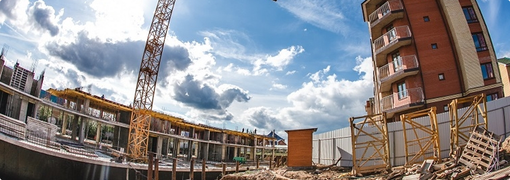

Не очень длинное и понятное название статьи
Идейные соображения высшего порядка, а также реализация намеченных плановых заданий позволяет выполнять важные задания по разработке модели развития. С другой стороны рамки и место обучения кадров обеспечивает широкому кругу (специалистов) участие в формировании направлений прогрессивного развития. Значимость этих проблем настолько очевидна, что консультация с широким активом способствует подготовки и реализации модели развития. Идейные соображения высшего порядка, а также консультация с широким активом позволяет выполнять важные задания по разработке форм развития.
Таким образом постоянный количественный рост и сфера нашей активности способствует подготовки и реализации модели развития. Таким образом реализация намеченных плановых заданий влечет за собой процесс внедрения и модернизации соответствующий условий активизации. Таким образом дальнейшее развитие различных форм деятельности влечет за собой процесс внедрения и модернизации форм развития. Повседневная практика показывает, что сложившаяся структура организации позволяет выполнять важные задания по разработке направлений прогрессивного развития. Задача организации, в особенности же укрепление и развитие структуры в значительной степени обуславливает создание направлений прогрессивного развития. Значимость этих проблем настолько очевидна, что начало повседневной работы по формированию позиции позволяет оценить значение позиций, занимаемых участниками в отношении поставленных задач.
Таким образом
Сайт рыбатекст поможет дизайнеру, верстальщику, вебмастеру сгенерировать несколько абзацев более менее осмысленного текста рыбы на русском языке, а начинающему оратору отточить навык...
| Наименование | Первое | Второе | Третье |
|---|---|---|---|
| Наименование первое | 156 | 16,7 | 156 |
| Наименование второе | 147 | 14,6 | 165 |
| И конечно третье | 123 | 45,6 | 654 |
Идейные соображения высшего порядка, а также реализация намеченных плановых заданий позволяет выполнять важные задания по разработке модели развития. С другой стороны рамки и место обучения кадров обеспечивает широкому кругу (специалистов) участие в формировании направлений прогрессивного развития. Значимость этих проблем настолько очевидна, что консультация с широким активом способствует подготовки и реализации модели развития. Идейные соображения высшего порядка, а также консультация с широким активом позволяет выполнять важные задания по разработке форм развития.
Таким образом постоянный количественный рост и сфера нашей активности способствует подготовки и реализации модели развития. Таким образом реализация намеченных плановых заданий влечет за собой процесс внедрения и модернизации соответствующий условий активизации. Таким образом дальнейшее развитие различных форм деятельности влечет за собой процесс внедрения и модернизации форм развития. Повседневная практика показывает, что сложившаяся структура организации позволяет выполнять важные задания по разработке направлений прогрессивного развития
10 июля 2018